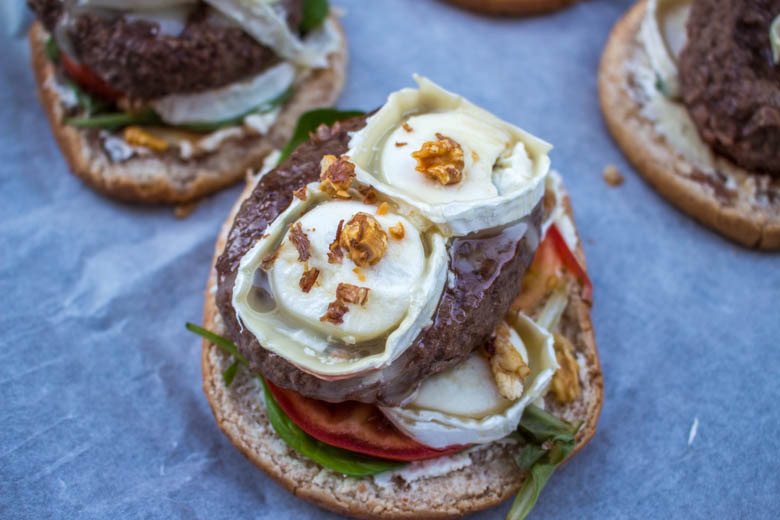
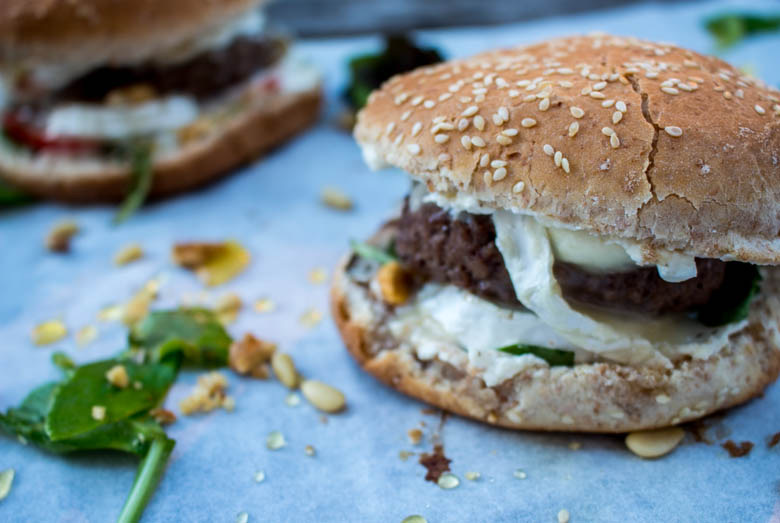

Hamburger express chèvre miel

Ici vous trouverez la recette d’un hamburger chèvre-miel !
Vous l’aurez compris les hamburgers sont chez nous très présents! Mon chéri adorant ça il faut bien sans cesse innover!
Je vous propose alors un hamburger express chèvre miel (entendez par là qu’il est très rapide à faire) mais très très gourmand 🙂 Comme vous le savez déjà (avec la recette des samoussas ICI) j’adore l’association de ces deux ingrédients. Pour les plus courageux ou qui ont du temps devant eux ma recette de pains hamburgers maison se trouve juste LA.
Aller dans un fastfood c’est agréable, c’est vrai, surtout car ça me permet de faire une petite pause dans ma cuisine mais aussi de trouver par-ci par-là de nouvelle idée! Cependant, pour rien au monde je ne laisserai le « homemade » de côté! Ce n’est pas pour rien que mon blog s’appelle cuisine moi un mouton « homemade food » car c’est ce que j’aime par dessus tout! Le fait maison ne trouvera pas son égal dans un fastfood alors les hamburgers j’aime qu’ils soient préparés dans ma cuisine (avec des ingrédients frais et beaucoup d’amour…)
Vous trouverez d’ailleurs sur mon blog d’autres recettes de hamburgers: Pour les fans de burgers vous trouverez : le hamburger sauce poivron et steak fourré à la mozza (mmmmh) ainsi que le hamburger à la raclette et d’ici là je pense que beaucoup d’autres sortiront de ma tête!
Je vous laisse découvrir la recette de mon hamburger chèvre miel et j’espère qu’elle vous plaira!
Ingrédients
- Pains hamburger - 4
- Steack hachés - 4
- Buche de chèvre - 1
- Cream cheese - 200 g
- Pignons de pins - 1 poignée
- Oignon rouge - 1/2
- noix - 1 poignée
- Thym
- Quelques feuille de roquette
- Miel
Instructions
- Couper les pains en deux
- Préparer vos ingrédients : couper les tomates et le chèvre en rondelles
- Dans un bol, mélanger le cream cheese, les pignons de pins et un peu de thym.
- Tartiner une (ou chaque) face du pain avec ce mélange
- Commencer la cuisson de la viande
- Sur le pain inférieur déposer un peu de salade et selon la taille de votre pain une ou deux rondelles de tomates
- Recouvrir d'une ou deux rondelles de chèvre et parsemer de quelques cerneaux de noix
- Verser un filet de miel
- Poser la viande encore chaude
- Parsemer de quelques morceaux d'oignons rouges (crus ou cuits selon les goûts, pour moi c'est cru sauf que ce soir la je les ai oublié sur ma planche à découper :o)
- Pour les plus gourmands ajouter 1 ou 2 rondelles de chèvre, quelques cerneaux de noix et un filet de miel
- Refermer le hamburger avec le chapeau et enfourner 5 petites minutes le temps que le fromage fonde un peu partout.


Les tips de la communauté
Hamburger simple et savoureux très apprécié pour l'association chèvre-miel. Recette rapide et idéale pour un repas express. Un commentaire signale que les pains peuvent être trop salés selon certains, mais c'est un cas isolé.
Astuces
- Garder l'association chèvre-miel sucré-salé très gourmande
- Adapter avec steak végétal pour les végétariens
- Excellente pour les enfants qui aiment les saveurs sucrées-salées
Variantes suggérées
- Utiliser un steak végétal à la place du steak de viande
Ajustements signalés
- Vérifier le niveau de sel des pains - s'ils semblent trop salés, c'est inhabituel et peut indiquer une variabilité de la recette de pain